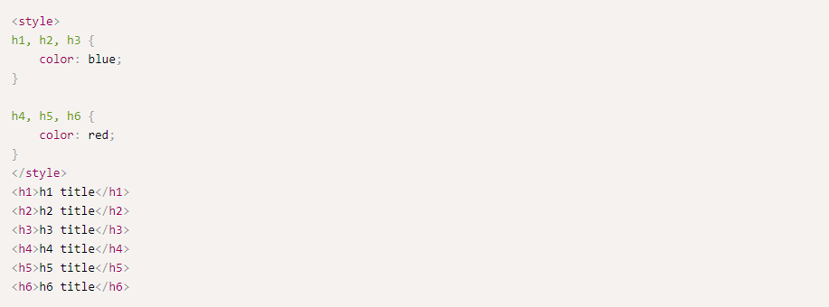

Selectors
CSS Selectors are extremely useful for defining a query on a subset of the elements on a page. Querying allows us
to do one of two things - declare a style to apply on the set of elements in a CSS stylesheet, or receive a list
of HTML elements programatically according to the query, using the querySelector method.
Here is an example - if we would want to color all paragraphs in the document blue, we can simply write:
The CSS selector "p" will select all "p" (paragraphs) in the page.
We can add constraints on the query and apply a different CSS to some elements using a more specific selector.
Let's color all "p" elements that have the "example" class with green. Note that in this example, the order of
the CSS definitions does not matter since the second selector is more specific - therefore it will override the
less specific CSS definition.
We can repeat the same process but this time adding an ID selector instead of the class selector.
CSS selectors also support the comma tag, for applying the same style block to a number of elements. This
example colors h1, h2 and h3 in blue and h4, h5 and h6 in red.

Descendant & Child Selectors
Apart from specifying an element type, an ID and/or a class name, we can also create selectors that select a
specific child only if it is contained in a specific hierarchy. For example, let's say we want to color all the
< strong > tags in any paragraph that has the "strongblue" class.
There are two types of child selectors - an ancestor selector like this one, and a direct child selector that
only selects the first level of hierarchy from the parent element that was selected. Here is the same code but
with a direct child selector:
If the < strong > element would have been encapsulated within a link, then this selector will not work since it
relies on a direct parent-child relationship between .strongblue and the strong element.
querySelector and querySelectorAll methods
HTML5 introduced the new document.querySelector and document.querySelectorAll methods which allows us to run the
same selectors and receive the first element that corresponds to the selector, or a list of elements, depending
on the method you use.
Let's see an example: